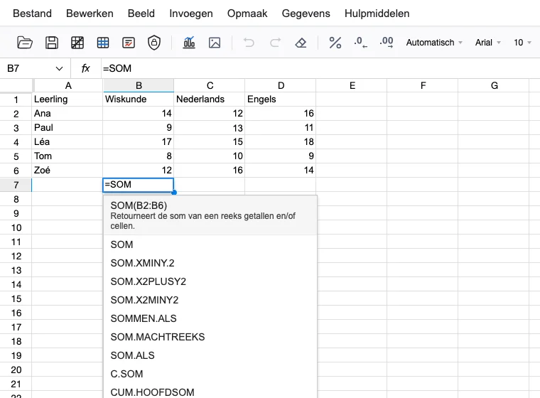
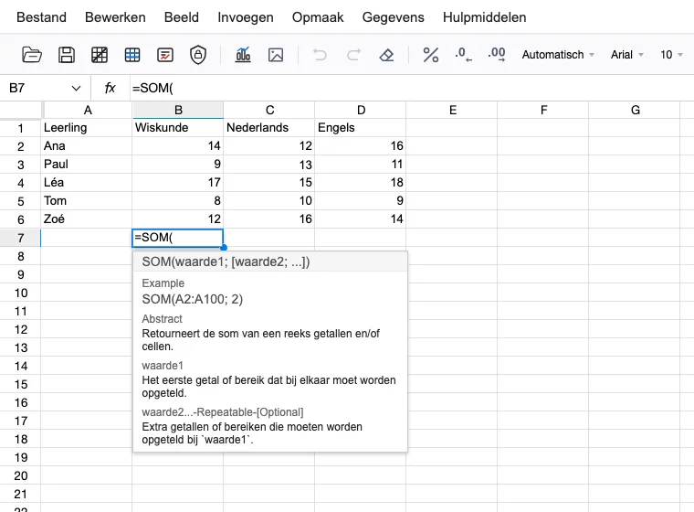
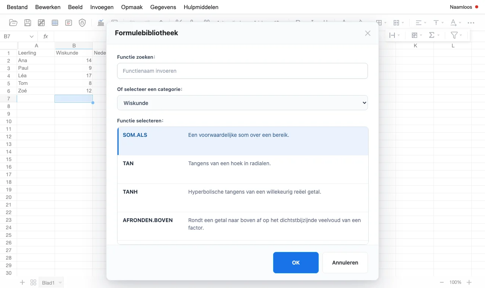

Formules
Een formule schrijven
Een formule begint met =. Ze bevat getallen, teksten tussen aanhalingstekens, celverwijzingen, operatoren en functies.
=B2*2
=(B2+C2+D2)/3
=GEMIDDELDE(B2:B6)
="Totaal: "&SOM(B2:B6)De cel toont het resultaat, de formulebalk de formule. Cellen die van een gewijzigde cel afhangen, worden meteen herberekend.
In het Nederlands is de komma decimaal en scheidt de puntkomma de argumenten: =AFRONDEN(3,14159; 2). Functienamen worden in kleine letters of hoofdletters getypt, in het Nederlands of het Engels: =som(B2:B6) en =SUM(B2:B6) worden aanvaard.
Cellen met de muis aanwijzen
Tijdens het schrijven van een formule voegt een klik op een cel van het blad haar adres in, slepen het bereik. Elke verwijzing heeft haar kleur, in de formule en op het blad.
Aanvullen
Vanaf de eerste letters van een naam stelt DocCells de functies voor die ze bevatten: ↑ ↓ om te doorlopen, Enter, Tab of een klik om te kiezen. Na het openingshaakje herinnert een hulpvak aan de argumenten.


De automatische som
schrijft een som. De pijl biedt Som, Gemiddelde, Aantal, Maximum, Minimum en Alle formules aan: de bibliotheek, waar je een functie zoekt op naam, beschrijving of categorie.

Operatoren
| Operator | Rol |
|---|---|
+ - * / | vier bewerkingen |
^ | macht: =2^10 |
% | percentage: =20%*B2 |
& | voegt teksten samen: =A2&" "&B2 |
= <> | gelijk, verschillend |
< > <= >= | vergelijkingen |
( ) | voorrang |
Machten gaan voor producten en quotiënten, dan sommen, dan vergelijkingen. =-2^2 geeft −4 (4 in Excel).
Verwijzingen
| Schrijfwijze | Betekenis |
|---|---|
B2 | een cel; volgt het doorvoeren |
$B$2 | dezelfde cel, ook bij doorvoeren |
B$2, $B2 | vaste rij, vaste kolom |
B2:D6 | een bereik |
B:B, 2:2 | een hele kolom, een hele rij |
Blad2!B2, 'Cijfers 2'!B2 | een cel van een ander blad |
cijfers | een benoemd bereik |
Omlaag doorgevoerd wordt =B2*$B$1 tot =B3*$B$1, =B4*$B$1…
Voorwaarden
=ALS(B2>=10; "geslaagd"; "gezakt")
=ALS(EN(B2>=10; C2>=10); "ja"; "nee")
=SCHAKELEN(A2; "a"; 1; "b"; 2; 0)
=AANTAL.ALS(B2:B6; ">10")
=SOM.ALS(A2:A6; "Ana"; B2:B6)
=GEMIDDELDE.ALS(B2:B6; "<10")- Logische waarden worden
WAAR()enONWAAR()geschreven, met haakjes. Ze worden als TRUE en FALSE getoond. - Een criterium is een tekst:
">10","<>0","Ana". De jokertekens*en?worden niet herkend. - Een lege cel herken je met
=B2=""; ze is niet gelijk aan 0.
Opzoeken in een tabel
=VERT.ZOEKEN("Léa"; A2:D6; 3; 0)
=INDEX(A2:A6; VERGELIJKEN(MAX(B2:B6); B2:B6; 0))De eerste zoekt Léa in de eerste kolom van de tabel en geeft de derde; het laatste argument 0 vraagt de exacte waarde. De tweede geeft de naam van wie het beste cijfer heeft.
Datums en tijden
Een datum is een aantal dagen, een tijd een deel van een dag: in cellen kun je ze optellen en aftrekken.
=A2+7
=A3-A2
=DAGEN(A3; A2)
=WEEKDAG(A2; 2)Een datum van DATUM of VANDAAG moet via een cel gaan om ermee op te tellen: =VANDAAG()+1 geeft #VALUE!, maar als A1 =VANDAAG() bevat, geeft =A1+1 morgen. Het resultaat is een getal: geef het een notatie Datum.
Fouten
| Getoond | Oorzaak |
|---|---|
#NAME? | onbekende naam: typefout, niet berekende functie, WAAR zonder haakjes, tekst zonder aanhalingstekens |
#VALUE! | onverwacht type: een tekst waar een getal nodig is |
DIV/0 | deling door nul of door een lege cel |
#N/A | waarde niet gevonden (VERGELIJKEN, VERT.ZOEKEN), of GEO buiten DocGeo |
#REF! | cel of blad dat niet bestaat |
#NUM! | getal buiten het domein: =WORTEL(-1) |
#ERROR! | verkeerd geschreven formule, of niet berekende functie |
ALS.FOUT vervangt de fout van een functie (#N/A, #NUM!): =ALS.FOUT(VERT.ZOEKEN(E1; A2:D6; 2; 0); "afwezig"). Die van een berekening (DIV/0, #VALUE!) vervangt ze niet: test tegen een deling door nul de deler, =ALS(B2; B3/B2; ""), wat geldt voor een nul en voor een lege cel.